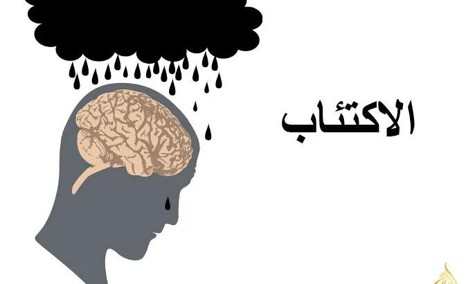
الاكتئاب
اضطراب مزاجي يسبب شعورًا دائمًا بالحزن وفقدان الاهتمام
المزيد
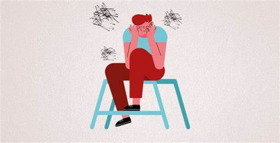
اضطراب القلق العام
شعور دائم بالقلق المفرط
المزيد
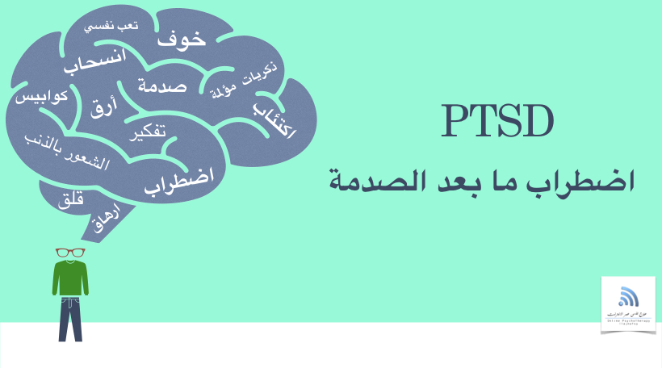
اضطراب ما بعد الصدمة
حالة صحية عقلية يستثيرها حدث مخيف قد يحدث لك أو قد تشهده
المزيد
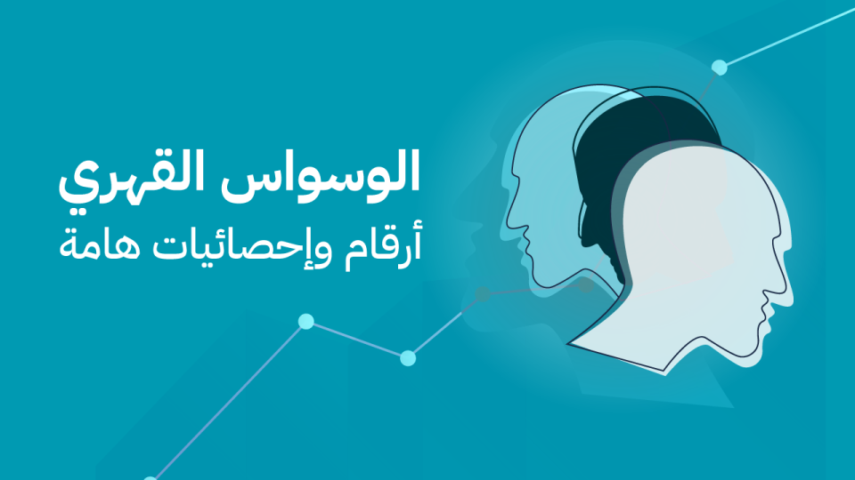
الوسواس القهري
نمط من الأفكار والمخاوف غير المرغوب فيها
المزيد
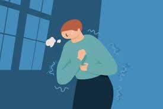
اضطراب الهلع
نوبة مفاجئة من الخوف الشديد
المزيد
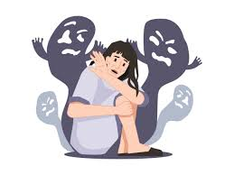
الانفصام في الشخصيه
مرض عقلي خطير يؤثر في طريقة تفكير الأشخاص وشعورهم وتصرفاتهم
المزيد
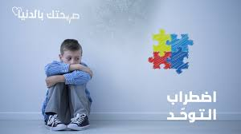
اضطراب التوحد
حالة ترتبط بنمو الدماغ وتؤثر على كيفية تمييز الشخص للآخرين
المزيد
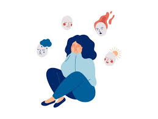
اضطراب الشخصية الحدية
أحد أمراض الصحة العقلية يؤثر في الطريقة التي يشعر بها الأشخاص
المزيد
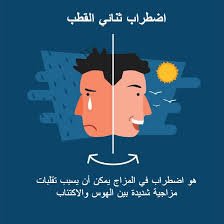
اضطراب ثنائي القطب
حالة صحية عقلية تتسبب في تقلبات مزاجية مفرطة
المزيد
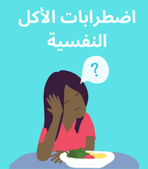
اضطرابات الأكل
تؤثر على صحتك الجسدية والعقلية. وتشمل هذه الحالات مشكلات في طبيعة تفكيرك في الطعام والأكل
المزيد
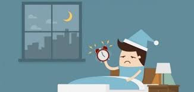
اضطرابات النوم
هي أمراض ينتج عنها تغيرات في طريقة نومك
المزيد
اضطراب فرط الحركة ونقص الانتباه
مجموعة من المشكلات المستمرة مثل صعوبة الحفاظ على الانتباه وفرط النشاط والسلوك الاندفاعي.
المزيد